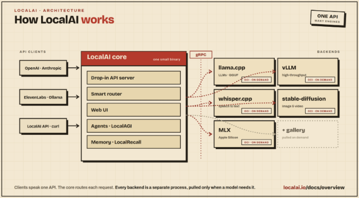

| PolarSPARC |
Quick Primer on LocalAI
| Bhaskar S | *UPDATED*06/14/2026 |
Overview
LocalAI is an open-source platform for running various models locally and serves as an API shim for both OpenAI as well as Anthropic APIs, allowing applications to be built against OpenAI or Anthropic APIs, which can be pointed at LocalAI with minimal or no code changes.
LocalAI can easily run on either a consumer grade CPU or on a consumer grade GPU and can be used for performing various generative AI tasks such as text generation, text to audio generation, text to image generation, etc.
Behind the scenes LocalAI integrates with the various models (for the different tasks) via Backends, which are primarily gRPC servers that manage the models.
The following illustration depicts the high-level architecture of LocalAI:

For the hands-on demonstration of LocalAI, we will make use of the official Docker image, which comes bundled with a default set of backends that fully enable all the features of LocalAI.
Note that LocalAI does NOT come bundled with default models and one needs to install the desired models for the various tasks.
Installation and Setup
The installation and setup will be on a Ubuntu 24.04 LTS based Linux desktop. Ensure that Docker is installed and setup on the desktop (see instructions).
Also, ensure that the Python 3.1x programming language as well as the Jupyter Notebook packages are installed. In addition, ensure the command-line utilities curl and jq are installed on the Linux desktop.
We will setup two required directories by executing the following command in a terminal window:
$ mkdir -p $HOME/.local_ai{/backends,/configuration,/models,/data,/tmp}
To download the latest version (v4.4.3 at the time of this article) of the docker image for LocalAI, execute the following command in a terminal window:
$ docker pull localai/localai:v4.4.3
The following should be the typical output:
v4.4.3: Pulling from localai/localai cb259a83ac3d: Pull complete a438421d38d8: Pull complete 0f9c328da9c0: Pull complete 9012256cad48: Pull complete 4f4fb700ef54: Pull complete 3a47bb1c2920: Pull complete 8ce73f2ef2b7: Pull complete 10b652323276: Pull complete Digest: sha256:1aeb407121b5f5a70ed33f74fdb805d86435503f59fc106c53484e08d724b841 Status: Downloaded newer image for localai/localai:v4.4.3 docker.io/localai/localai:v4.4.3
To install the necessary Python packages, execute the following command:
$ pip install openai pydantic
This completes all the system installation and setup for the LocalAI hands-on demonstration.
Hands-on with LocalAI
For the hands-on demonstration, we will perform the tasks - embedding, text generation, text to audio conversion, and text to image generation.
This implies we will have to install the appropriate models in LocalAI for handling the various tasks.
We will assume the ip address of the desktop to be 192.168.1.25.
To check for the available embedding models, execute the following command in the terminal window:
$ docker run --rm --name local-ai -u $(id -u $USER):$(id -g $USER) --add-host=host.docker.internal:host-gateway --network=host -p 192.168.1.25:8080:8080 -v $HOME/.local_ai/backends:/backends -v $HOME/.local_ai/configuration:/configuration -v $HOME/.local_ai/models:/models -v $HOME/.local_ai/data:/data -v $HOME/.local_ai/tmp:/tmp localai/localai:v4.4.3 models list | grep embed
The following would be the typical output:
- localai@qwen3-vl-embedding-8b - localai@qwen3-vl-embedding-2b - localai@qwen3-embedding-4b - localai@qwen3-embedding-8b - localai@qwen3-embedding-0.6b - localai@granite-embedding-107m-multilingual - localai@granite-embedding-125m-english - localai@embeddinggemma-300m - localai@bert-embeddings - localai@nomic-embed-text-v1.5
We will choose the localai@nomic-embed-text-v1.5 embedding model and to install this model, execute the following command in the terminal window:
$ docker run --rm --name local-ai -u $(id -u $USER):$(id -g $USER) --add-host=host.docker.internal:host-gateway --network=host -p 192.168.1.25:8080:8080 -v $HOME/.local_ai/backends:/backends -v $HOME/.local_ai/configuration:/configuration -v $HOME/.local_ai/models:/models -v $HOME/.local_ai/data:/data -v $HOME/.local_ai/tmp:/tmp localai/localai:v4.4.3 models install localai@nomic-embed-text-v1.5
The following would be the typical trimmed output:
...[TRIM]... Jun 14 11:28:00 INFO Using forced capability run file capabilityRunFile="/run/localai/capability" capability="default\n" env="" Jun 14 11:28:00 INFO installing model model="localai@nomic-embed-text-v1.5" license="" Jun 14 11:28:00 INFO Downloading url="https://huggingface.co/mradermacher/nomic-embed-text-v1.5-GGUF/resolve/main/nomic-embed-text-v1.5.f16.gguf" Jun 14 11:28:03 INFO File downloaded and verified file="/models/nomic-embed-text-v1.5.f16.gguf" ...[TRIM]...
To check if the gemma 4 model is available for text generation, execute the following command in the terminal window:
$ docker run --rm --name local-ai -u $(id -u $USER):$(id -g $USER) --add-host=host.docker.internal:host-gateway --network=host -p 192.168.1.25:8080:8080 -v $HOME/.local_ai/backends:/backends -v $HOME/.local_ai/configuration:/configuration -v $HOME/.local_ai/models:/models -v $HOME/.local_ai/data:/data -v $HOME/.local_ai/tmp:/tmp localai/localai:v4.4.3 models list | grep gemma-4
The following would be the typical output:
- localai@gemma-4-26b-a4b-it-qat - localai@gemma-4-12b-it-qat-q4_0 - localai@gemma-4-e2b-it-qat-q4_0 - localai@gemma-4-e4b-it-qat-q4_0 - localai@gemma-4-26b-a4b-it-qat-q4_0 - localai@gemma-4-31b-it-qat-q4_0 - localai@gemma-4-12b-it-qat-mtp - localai@gemma-4-26b-a4b-it-qat-mtp - localai@gemma-4-31b-it-qat-mtp - localai@gemma-4-26b-a4b-it-apex - localai@gemma-4-26b-a4b-it - localai@gemma-4-e2b-it - localai@gemma-4-e4b-it - localai@gemma-4-31b-it - localai@medgemma-4b-it - localai@google_medgemma-4b-it - localai@gemma-4-e2b-it:sglang-mtp - localai@gemma-4-e4b-it:sglang-mtp
We will choose the localai@gemma-4-e2b-it-qat-q4_0 text generation model and to install this model, execute the following command in the terminal window:
$ docker run --rm --name local-ai -u $(id -u $USER):$(id -g $USER) --add-host=host.docker.internal:host-gateway --network=host -p 192.168.1.25:8080:8080 -v $HOME/.local_ai/backends:/backends -v $HOME/.local_ai/configuration:/configuration -v $HOME/.local_ai/models:/models -v $HOME/.local_ai/data:/data -v $HOME/.local_ai/tmp:/tmp localai/localai:v4.4.3 models install localai@gemma-4-e2b-it-qat-q4_0
The following would be the typical trimmed output:
...[TRIM]... Jun 14 11:29:37 INFO Using forced capability run file capabilityRunFile="/run/localai/capability" capability="default\n" env="" Jun 14 11:29:37 INFO installing model model="localai@gemma-4-e2b-it-qat-q4_0" license="apache-2.0" Jun 14 11:29:37 INFO Downloading url="https://huggingface.co/google/gemma-4-E2B-it-qat-q4_0-gguf/resolve/main/gemma-4-E2B_q4_0-it.gguf" Jun 14 11:30:10 INFO Downloading url="https://huggingface.co/google/gemma-4-E2B-it-qat-q4_0-gguf/resolve/main/gemma-4-E2B-it-mmproj.gguf" Jun 14 11:30:19 INFO File downloaded and verified file="/models/llama-cpp/mmproj/gemma-4-E2B-it-qat-q4_0-gguf/gemma-4-E2B-it-mmproj.gguf" ...[TRIM]...
To check for the available text to audio models, execute the following command in the terminal window:
$ docker run --rm --name local-ai -u $(id -u $USER):$(id -g $USER) --add-host=host.docker.internal:host-gateway --network=host -p 192.168.1.25:8080:8080 -v $HOME/.local_ai/backends:/backends -v $HOME/.local_ai/configuration:/configuration -v $HOME/.local_ai/models:/models -v $HOME/.local_ai/data:/data -v $HOME/.local_ai/tmp:/tmp localai/localai:v4.4.3 models list | grep tts
The following would be the typical output:
- localai@neutts-air - localai@vllm-omni-qwen3-tts-custom-voice - localai@qwen3-tts-cpp - localai@qwen3-tts-cpp-0.6b-base-q4 - localai@qwen3-tts-cpp-1.7b-base - localai@qwen3-tts-cpp-1.7b-base-q4 - localai@qwen3-tts-cpp-customvoice - localai@qwen3-tts-cpp-customvoice-q4 - localai@qwen3-tts-cpp-1.7b-customvoice - localai@qwen3-tts-cpp-1.7b-customvoice-q4 - localai@qwen3-tts-cpp-1.7b-voicedesign - localai@qwen3-tts-cpp-1.7b-voicedesign-q4 - localai@qwen3-tts-1.7b-custom-voice - localai@qwen3-tts-0.6b-custom-voice - localai@lfm2.5-audio-1.5b-tts - localai@pocket-tts - localai@kitten-tts - localai@outetts - localai@parler-tts-mini-v0.1 - localai@voice-en-us-libritts-high - localai@voice-cy_GB-bu_tts-medium - localai@voice-en_US-libritts_r-medium - localai@voice-id_ID-news_tts-medium - localai@vibevoice-tts-crispasr - localai@chatterbox-tts-crispasr - localai@qwen3-tts-customvoice-crispasr - localai@orpheus-tts-crispasr - localai@piper-id_ID-news_tts-medium-crispasr
We will choose the localai@pocket-tts text to audio model and to install this model, execute the following command in the terminal window:
$ docker run --rm --name local-ai -u $(id -u $USER):$(id -g $USER) --add-host=host.docker.internal:host-gateway --network=host -p 192.168.1.25:8080:8080 -v $HOME/.local_ai/backends:/backends -v $HOME/.local_ai/configuration:/configuration -v $HOME/.local_ai/models:/models -v $HOME/.local_ai/data:/data -v $HOME/.local_ai/tmp:/tmp localai/localai:v4.4.3 models install localai@pocket-tts
The following would be the typical trimmed output:
...[TRIM]... Jun 14 11:31:52 INFO Using forced capability run file capabilityRunFile="/run/localai/capability" capability="default\n" env="" Jun 14 00:31:52 INFO installing model model="localai@pocket-tts" license="mit" ...[TRIM]...
To check if the flux model is available for image generation, execute the following command in the terminal window:
$ docker run --rm --name local-ai -u $(id -u $USER):$(id -g $USER) --add-host=host.docker.internal:host-gateway --network=host -p 192.168.1.25:8080:8080 -v $HOME/.local_ai/backends:/backends -v $HOME/.local_ai/configuration:/configuration -v $HOME/.local_ai/models:/models -v $HOME/.local_ai/data:/data -v $HOME/.local_ai/tmp:/tmp localai/localai:v4.4.3 models list | grep flux
The following would be the typical output:
- localai@flux.1-dev - localai@flux.1-schnell - localai@flux.1-dev-ggml - localai@flux.1dev-abliteratedv2 - localai@flux.1-kontext-dev - localai@flux.1-dev-ggml-q8_0 - localai@flux.1-dev-ggml-abliterated-v2-q8_0 - localai@flux.1-krea-dev-ggml - localai@flux.1-krea-dev-ggml-q8_0 - localai@flux.2-dev - localai@flux.2-klein-4b - localai@flux.2-klein-9b
We will choose the localai@flux.2-klein-4b image generation model and to install this model, execute the following command in the terminal window:
$ docker run --rm --name local-ai -u $(id -u $USER):$(id -g $USER) --add-host=host.docker.internal:host-gateway --network=host -p 192.168.1.25:8080:8080 -v $HOME/.local_ai/backends:/backends -v $HOME/.local_ai/configuration:/configuration -v $HOME/.local_ai/models:/models -v $HOME/.local_ai/data:/data -v $HOME/.local_ai/tmp:/tmp localai/localai:v4.4.3 models install localai@flux.2-klein-4b
The following would be the typical trimmed output:
...[TRIM]... Jun 14 11:32:51 INFO Using forced capability run file capabilityRunFile="/run/localai/capability" capability="default\n" env="" Jun 14 11:32:51 INFO installing model model="localai@flux.2-klein-4b" license="apache-2.0" Jun 14 11:32:52 INFO Downloading url="https://huggingface.co/leejet/FLUX.2-klein-4B-GGUF/resolve/main/flux-2-klein-4b-Q4_0.gguf" Jun 14 11:33:48 INFO Downloading url="https://huggingface.co/Comfy-Org/flux2-dev/resolve/main/split_files/vae/flux2-vae.safetensors" Jun 14 11:33:56 INFO Downloading url="https://huggingface.co/unsloth/Qwen3-4B-GGUF/resolve/main/Qwen3-4B-Q4_K_M.gguf" Jun 14 11:35:18 INFO File downloaded and verified file="/models/stablediffusion-cpp/models/Qwen3-4B-Q4_K_M.gguf" ...[TRIM]...
Now that we are all ready to go, start the LocalAI platform by executing the following command in the terminal window:
$ docker run --rm --name local-ai -u $(id -u $USER):$(id -g $USER) --add-host=host.docker.internal:host-gateway --network=host -p 192.168.1.25:8080:8080 -v $HOME/.local_ai/backends:/backends -v $HOME/.local_ai/configuration:/configuration -v $HOME/.local_ai/models:/models -v $HOME/.local_ai/data:/data -v $HOME/.local_ai/tmp:/tmp localai/localai:v4.4.3
The following would be the typical output:
CPU info: model name : AMD Ryzen 7 5700X 8-Core Processor flags : fpu vme de pse tsc msr pae mce cx8 apic sep mtrr pge mca cmov pat pse36 clflush mmx fxsr sse sse2 ht syscall nx mmxext fxsr_opt pdpe1gb rdtscp lm constant_tsc rep_good nopl nonstop_tsc cpuid extd_apicid aperfmperf rapl pni pclmulqdq monitor ssse3 fma cx16 sse4_1 sse4_2 x2apic movbe popcnt aes xsave avx f16c rdrand lahf_lm cmp_legacy svm extapic cr8_legacy abm sse4a misalignsse 3dnowprefetch osvw ibs skinit wdt tce topoext perfctr_core perfctr_nb bpext perfctr_llc mwaitx cpb cat_l3 cdp_l3 hw_pstate ssbd mba ibrs ibpb stibp vmmcall fsgsbase bmi1 avx2 smep bmi2 erms invpcid cqm rdt_a rdseed adx smap clflushopt clwb sha_ni xsaveopt xsavec xgetbv1 xsaves cqm_llc cqm_occup_llc cqm_mbm_total cqm_mbm_local user_shstk clzero irperf xsaveerptr rdpru wbnoinvd arat npt lbrv svm_lock nrip_save tsc_scale vmcb_clean flushbyasid decodeassists pausefilter pfthreshold avic v_vmsave_vmload vgif v_spec_ctrl umip pku ospke vaes vpclmulqdq rdpid overflow_recov succor smca fsrm debug_swap ibpb_exit_to_user CPU: AVX found OK CPU: AVX2 found OK CPU: no AVX512 found Jun 14 00:35:02 INFO Using forced capability run file capabilityRunFile="/run/localai/capability" capability="default\n" env="" Jun 14 00:35:02 INFO Starting LocalAI threads=8 modelsPath="//models" Jun 14 00:35:02 INFO LocalAI version version="v4.4.3 (4d3d54d61b083d5b435636c7638dec16b051553f)" Jun 14 00:35:02 INFO LocalAI Assistant in-memory MCP server initialised tools=29 read_only=false Jun 14 00:35:02 INFO stats: using in-memory ring buffer (no-auth single-user mode) Jun 14 00:35:02 INFO stats: fallback user wired local_user_id="31039261-15c0-46ba-9822-a993e79e3459" Jun 14 00:35:02 INFO pii: filter enabled patterns=6 config_path="" persisted_overrides=0 Jun 14 00:35:02 INFO Loaded tasks from persister count=0 Jun 14 00:35:02 INFO Loaded jobs from persister count=0 Jun 14 00:35:02 INFO AgentJobService started retention_days=30 Jun 14 00:35:02 INFO Preloading models path="//models" Model name: flux.2-klein-4b Model name: gemma-4-e2b-it-qat-q4_0 Model name: nomic-embed-text-v1.5 Model name: pocket-tts Jun 14 00:35:02 INFO core/startup process completed! Jun 14 00:35:02 INFO LocalAI is started and running address=":8080" Jun 14 00:35:02 INFO Agent pool started (standalone/LocalAGI mode) stateDir="//data" apiURL="http://127.0.0.1:8080"
To test the local API endpoints, open a new terminal window to perform the various curl commands.
To list all the installed models on the running LocalAI platform, execute the following command in the terminal:
$ curl -s http://192.168.1.25:8080/v1/models | jq
The following should be the typical output:
{
"object": "list",
"data": [
{
"id": "nomic-embed-text-v1.5",
"object": "model"
},
{
"id": "pocket-tts",
"object": "model"
},
{
"id": "flux.2-klein-4b",
"object": "model"
},
{
"id": "gemma-4-e2b-it-qat-q4_0",
"object": "model"
}
]
}
Next, to send a user text to the installed text embedding model for an embedding response, execute the following command:
$ curl -s http://192.168.1.25:8080/v1/embeddings -X POST -H "Content-Type: application/json" -d '{
"input": "LocalAI is very good!",
"model": "nomic-embed-text-v1.5"
}' | jq "."
The following should be the typical trimmed embedding output:
{
"created": 1781397386,
"object": "list",
"id": "40ac5ff5-f8f1-473f-9a6c-c229f2b57171",
"model": "nomic-embed-text-v1.5",
"data": [
{
"embedding": [
0.008724315,
0.04154468,
-0.19155857,
-0.015543682,
-0.02621489,
-0.03186404,
0.00116063,
0.02089727,
-0.012686667,
-0.009345424,
...[ TRIM ]...
0.09869765,
-0.017687557,
0.0062609147,
-0.017183295,
0.013117128,
-0.011258059,
0.003946815,
-0.0027934387,
-0.009456794,
-0.030608324
],
"index": 0,
"object": "embedding"
}
]
}
Moving on to the next task of text generation ...
To send a user prompt to the installed gemma-4 LLM model for a response, execute the following command in the terminal window:
$ curl -s http://192.168.1.25:8080/v1/chat/completions -H "Content-Type: application/json" -d '{
"model": "gemma-4-e2b-it-qat-q4_0",
"messages": [{"role": "user", "content": "Describe an llm model using less than 50 words"}],
"temperature": 0.7
}' | jq
The following would be the typical output:
{
"created": 1781397510,
"object": "chat.completion",
"id": "62c9c917-ebc2-48a6-a29f-17c9eb29dca8",
"model": "gemma-4-e2b-it-qat-q4_0",
"choices": [
{
"index": 0,
"finish_reason": "stop",
"message": {
"role": "assistant",
"content": "An LLM is a large neural network trained on massive text datasets. It learns patterns and context to predict the most probable next word, enabling it to generate human-like text, answer questions, summarize information, and perform complex language tasks.",
"reasoning": "Thinking Process:\n\n1. **Analyze the Request:** The user wants a description of an LLM (Large Language Model) that is under 50 words.\n2. **Identify Key LLM Attributes:** What defines an LLM?\n * It's a neural network.\n * It processes massive amounts of text.\n * It's trained on data.\n * It predicts the next word/token.\n * It generates human-like text (answers, summaries, code).\n3. **Draft Concise Descriptions (Iterative Refinement):**\n * *Draft 1 (Focus on function):* An LLM is a massive neural network trained on vast text datasets. It predicts the most probable next word in a sequence, allowing it to generate human-like text, answer questions, summarize information, and translate languages. (Too long - 39 words, but could be tighter).\n * *Draft 2 (Focus on core mechanism):* A Large Language Model (LLM) is a deep learning neural network trained on massive text data. It uses probabilistic patterns to understand context, generate coherent human language, answer queries, and perform various natural language tasks. (40 words).\n4. **Final Selection and Polish (Under 50 words):** Ensure it hits the main points clearly and concisely.\n\n*Self-Correction during drafting: Make sure the definition is accurate without getting too technical (avoiding specific transformer architecture unless necessary, as the goal is a general description).*\n\n*Final Check against constraint:* Is it under 50 words? Yes. Is it descriptive? Yes. (Proceed with final output)."
}
}
],
"usage": {
"prompt_tokens": 28,
"completion_tokens": 407,
"total_tokens": 435
}
}
Moving on to the next task of text to audio generation ...
To send a sample text to the installed pocket-tts audio generation model, execute the following command in the terminal window:
$ curl -s http://192.168.1.25:8080/tts -H "Content-Type: application/json" -d '{
"input": "LocalAI seems to be good for running various models!",
"model": "pocket-tts",
"voice": "jane"
}'
There will be no output on the terminal !
The audio file will be saved in the directory $HOME/.local_ai/tmp/generated/content/audio.
Here is the generated audio file:
Moving on to the final task of text to image generation ...
To send a sample text to the installed flux image generation model, execute the following command in the terminal window:
$ curl -s http://192.168.1.25:8080/v1/images/generations -H 'Content-Type: application/json' -d '{
"prompt": "A deer in a park covered with snow",
"step": 25,
"size": "256x256"
}' | jq
The following would be the typical output:
{
"created": 1781398456,
"id": "a3903930-74ca-441a-b2dc-fa855f4c8f30",
"data": [
{
"embedding": null,
"index": 0,
"url": "http://192.168.1.25:8080/generated-images/b643436740188.png"
}
],
"usage": {
"prompt_tokens": 0,
"completion_tokens": 0,
"total_tokens": 0,
"input_tokens_details": {
"text_tokens": 0,
"image_tokens": 0
}
}
}
The following is the generated image by the model:
Note that the image file will be saved in the directory $HOME/.local_ai/tmp/generated/content/images.
Finally, shifting gears to demonstrate the various tasks using the OpenAI SDK ...
The following are the contents of the environment configuration file .env:
EMBEDDING_MODEL='nomic-embed-text-v1.5' LLM_MODEL='gemma-4-e2b-it-qat-q4_0' AUDIO_MODEL='pocket-tts' IMAGE_MODEL='flux.2-klein-4b' API_KEY='polarsparc' BASE_URL='http://192.168.1.25:8080/v1/'
To load the environment configuration and initialize variables, execute the following code snippet:
from dotenv import load_dotenv, find_dotenv
import os
load_dotenv(find_dotenv())
embedding_model = os.getenv('EMBEDDING_MODEL')
llm_model = os.getenv('LLM_MODEL')
audio_model = os.getenv('AUDIO_MODEL')
image_model = os.getenv('IMAGE_MODEL')
api_key = os.getenv('API_KEY')
base_url = os.getenv('BASE_URL')
There will be no output generated.
To get the embedding vector for a given input text from the LocalAI platform, execute the following code snippet:
from openai import OpenAI
client = OpenAI(
api_key=api_key,
base_url=base_url
)
text = 'LocalAI is great for local testing!'
response = client.embeddings.create(
input = [text],
model=embedding_model,
)
print(response.data[0].embedding)
The following should be the typical trimmed output:
[0.03261595964431763, 0.05440229922533035, -0.19516122341156006, -0.028359385207295418, 0.027675945311784744, -0.04765535891056061, 0.03257906064391136, [... TRIM ...] -0.026756983250379562, 0.03671528398990631, -0.004582556895911694, -0.014343341812491417, -0.06610661000013351, 0.02362898364663124, -0.027483072131872177]
To send a user prompt to the LLM model running on the LocalAI platform, execute the following code snippet:
messages = [{"role": "user", "content": "Describe llm model using less than 50 words"}]
response = client.chat.completions.create(
messages=messages,
model=llm_model,
stream=False,
)
print(response.choices[0].message.content)
The following should be the typical output:
A Large Language Model (LLM) is an AI trained on massive amounts of text data to understand, generate, and predict human language. They can answer questions, summarize content, write creatively, translate languages, and engage in complex conversations.
To generate an audio output for the user text from the text to audio model running on the LocalAI platform, execute the following code snippet:
client.audio.speech.create(
model=audio_model,
voice='michael',
input=text
)
There will be output on the terminal and audio file will be saved as a .WAV file.
Here is the generated audio file:
To generate an image corresponding to the user prompt from the image generation model running on the LocalAI platform, execute the following code snippet:
response = client.images.generate(
prompt='a cute baby snow leopard that is growling',
size='256x256',
)
print(response.data[0].url)
The following should be the typical output:
http://192.168.1.25:8080/generated-images/b641126708929.png
The following is the generated image by the model:
This concludes the various demonstrations on using the LocalAI platform as a local instance of OpenAI for development and testing !
References